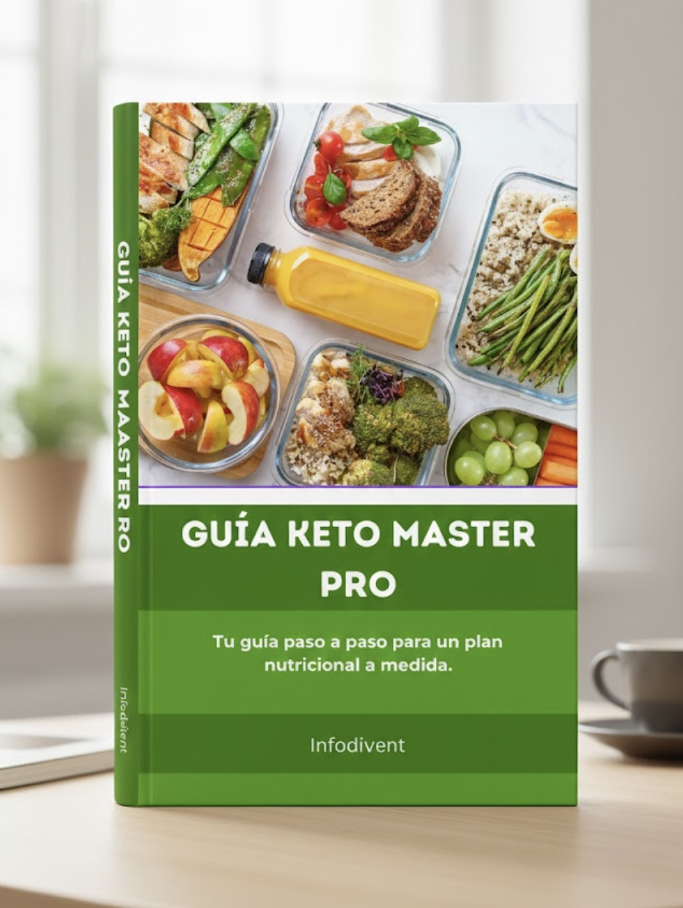
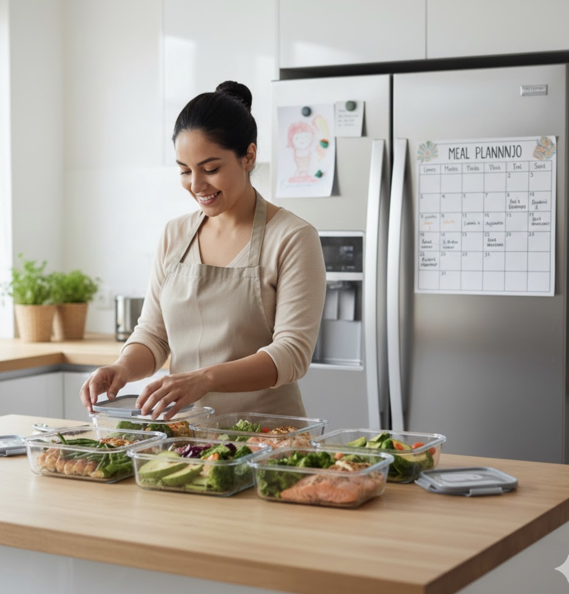

Pago Seguro
Garantía de 7 días
¡DOMINA TU TRANSFORMACIÓN KETO CON EL MÉTODO MÁS COMPLETO!
EL SISTEMA DEFINITIVO PARA ORGANIZAR TU ALIMENTACIÓN, REDUCIR CARBOHIDRATOS Y ACELERAR TUS RESULTADOS
Planificación · Hábitos · Listas de compras · Mini recetas · Ayuno · Progreso · Mentalidad

Descubre cómo acelerar tus avances, mantenerte constante y mejorar tu energía sin complicarte.
Un método diseñado para mujeres y hombres que quieren dejar la confusión y avanzar con claridad.
Resultados desde el día 7 utilizando estrategias simples, efectivas y 100% naturales.
La Guía Keto Master Pro es tu plan estructurado, pensado para simplificar tus días, ayudarte a mantener disciplina y potenciar tus resultados.
Un sistema práctico + herramientas imprimibles + mini recetas + organización semanal paso a paso.
Oferta exclusiva por tiempo limitado
$35 USD HOY SOLO: $14 USD
Acceso inmediato · Pago seguro · Garantía de 7 días
Pago Seguro
Garantía de 7 días
UN PLAN COMPLETO DE 50 PÁGINAS PARA QUE PUEDAS:
Crear tu menú semanal sin estrés
Usar listas de supermercado optimizadas
Entender cómo distribuir tus macros
Aplicar protocolos de ayuno simples
Aumentar tu energía durante todo el día
Mantener consistencia sin sentirte abrumada/o
Romper estancamientos y seguir progresando
Usar rutinas rápidas para mejorar tu metabolismo
Incluye herramientas descargables, tablas, pasos, tips, checklists y contenido premium nunca antes publicado.
Plan semanal Keto PRO editable e imprimible
Sistema 3×3 Keto (9 combinaciones rotativas fáciles)
Lista de compras optimizada
Tabla de macros para principiantes y avanzados
Protocolos de Ayuno Intermitente (3 niveles)
Tips para romper estancamientos metabólicos
Estrategias para aumentar energía y saciedad
Plantillas de organización diaria
Mini recetario PRO (12 recetas rápidas)
Checklist de hábitos esenciales
Acceso inmediato y para siempre

"Con esta guía por fin pude organizar mi semana sin sentirme perdida. Antes siempre estaba confundida sobre qué comer, cuándo comer y cómo planificar mis comidas. Esto es lo que me faltaba para avanzar. Ahora tengo un plan claro cada semana, sé exactamente qué comprar y cómo organizar todo. La diferencia en mi vida ha sido enorme."
"El método es demasiado claro y fácil de seguir. En una semana mi energía cambió por completo. Antes me sentía agotada todo el tiempo y no sabía cómo mantener mis hábitos saludables. Con esta guía todo tiene sentido ahora. Tengo un sistema que realmente funciona y me ayuda a mantener la consistencia sin sentirme abrumada."
"Nunca había logrado mantenerme tan constante con ningún plan de alimentación. Siempre empezaba con mucha motivación pero después de unos días me rendía porque no tenía un sistema claro. La planificación me ayudó muchísimo. Ahora sé exactamente qué hacer cada día y eso hace toda la diferencia. Por fin encontré algo que puedo mantener a largo plazo."
No. Esta guía te organiza y te enseña a comer bajo en carbohidratos sin complicaciones.
Es extremadamente simple. Todo está explicado paso a paso.
Muchos usuarios notan mejoras entre los días 5 y 7.
No. Incluye opciones rápidas y recetas simples.
Sí. Es perfecta para principiantes y también para quienes ya conocen keto.
Sí, lo descargas al instante y es tuyo para siempre.
Tu información está 100% segura
Ambiente seguro y autenticado
100% revisado y verificado
Acceso al instante
Más de 10.000 usuarios confían en nuestros recursos

Si en una semana no notas mejoría en tu energía, claridad o consistencia, te devolvemos tu inversión.
COMPRA 100% SEGURA · ENTREGA INMEDIATA · ACCESO DE POR VIDA
¡QUIERO EMPEZAR MI TRANSFORMACIÓN!Precio final: $14 USD